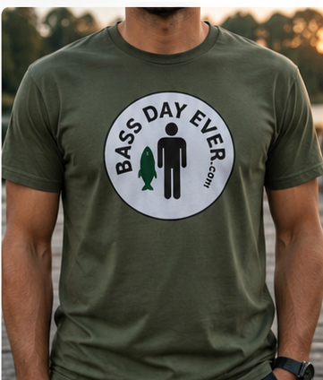
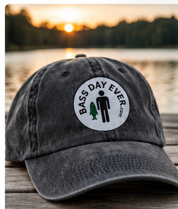
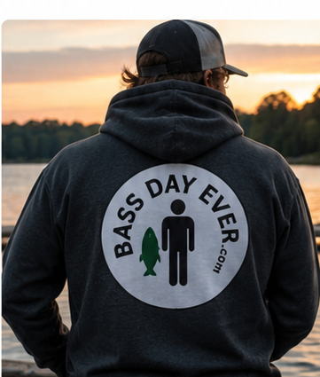
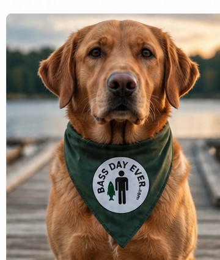
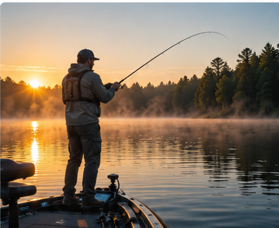

The Bass Day Ever TeeTHE ONE THAT STARTS THE CONVERSATION
Bass Day Ever is for the people who measure a good day in casts, laughs, lake water and the people standing beside them.
Not backpacks in the city. Not generic adventure. Boats. Bass. Tackle. Dogs on docks. Parents teaching kids to cast. Friends talking fishing until the sun is gone. Apparel is the uniform. The lake is the clubhouse.





Dad and daughter. Mom and son. Brother and sister. Grandpa and grandkid. The crew you fish with is part of the story. Make the patch mean something.
EXPLORE PATCHES →There is a point when the shoreline disappears behind you and everything gets quieter. Phones matter less. Conversation gets better. Kids remember the fish they caught with you. That's not a lifestyle stock photo. That's the reason this brand exists.
Fishermen solve problems. A better bait. A smarter accessory. A tool you made because nothing on the shelf worked right. Bass Day Ever gives independent anglers and makers a place to bring those ideas into the community.
I BUILT SOMETHING →